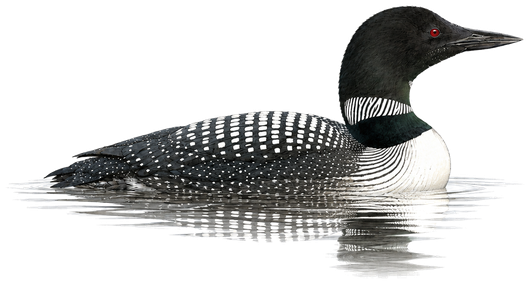
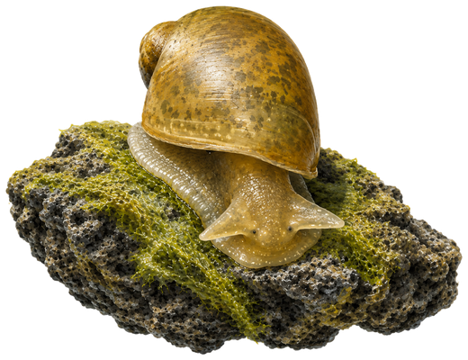

About the film
Þingvallavatn is Iceland's largest lake and one of the country's great natural treasures. Beneath its still surface lies a world of Arctic char, brown trout and small creatures that have evolved in isolation for thousands of years.
The film follows Jakob Sindri Þórsson fishing on the lake: teaching fly fishing, patiently reading the behaviour of the fish, and using fishing as a way into a larger story about life in the lake. Interviews with scientists who have studied its fish populations give the story depth.

Why it matters
Þingvallavatn is unique in the world, both for its geology and for the life it has given rise to. To tell the story of the lake is to tell a story of nature, science, culture and people's relationship with the land.
Who is making it
Jakob Sindri Þórsson is an angler and film enthusiast who has had a camera at hand since childhood. For years he has spent countless hours at Þingvallavatn with both rod and camera. The film grew out of a wish to better understand the lake's ecosystem, the stories connected to it, and the changes that may lie ahead.
Where it stands
-
Done:
Script drafted in 2024
-
Done:
Filming began at the lake in 2025, with the first interviews
-

In progress now
Further seasonal and underwater filming
-
Coming up:
Editing, sound and colour grading planned for 2027
-
Coming up:
Premiere planned for late 2027 or early 2028
Support the film
This is an independent film, and every contribution matters.
Seasonal and underwater filming is under way now, with editing, sound and colour grading planned for 2027. Your support goes toward filming, travel, equipment, sound and post-production.

You choose the amount. Paid in euros.
Questions, or another way to help? Get in touch.